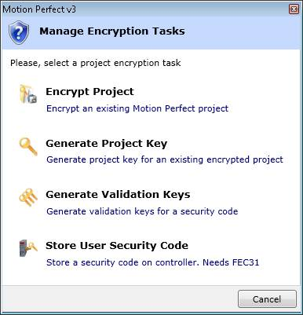

Motion Perfect 3 Project Encryptor is a tool that can be run both as a standalone application, and from within Motion Perfect 3 itself. It encrypts one or more programs in a Motion Perfect 3 project so that the TrioBASIC/IEC 61131-3 source for that program cannot be read. This gives solution providers a way of protecting their work from possible reverse engineering attempts by third parties.
The encryption process uses a "Project Password" together with a security code to encrypt one or more Trio BASIC programs in a project. For "encrypted" IEC 61131-3 tasks, the source code is removed, and only the executable image remains in the encrypted project. The encryption of other types of programs or files is not supported.
The encryption process creates a new project leaving the original unencrypted project intact. When the encrypted version of a project is loaded onto a Motion Coordinator a "Project Key" is required to enable the decryption of the encrypted programs. This key, which is generated by the encryption tool, is used by the Motion Coordinator to decrypt the Trio BASIC programs for compilation and running.
The decryption "Project Key", can be generated from the "Project Password" and one of:
1. the security code of the target Motion Coordinator and is unique to that Motion Coordinator, being derived from its serial number and an in-built hardware identification.
2. a custom user security code, set by the user.
3. an OEM security code set by the equipment manufacturer.
The process uses a wizard-like user interface, which guides the user through the process step by step.
The project encryptor tool can be started from within Motion Perfect by selecting "Project/Manage Encryption" from the main men.

The user can select one of four operations: